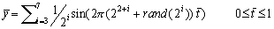
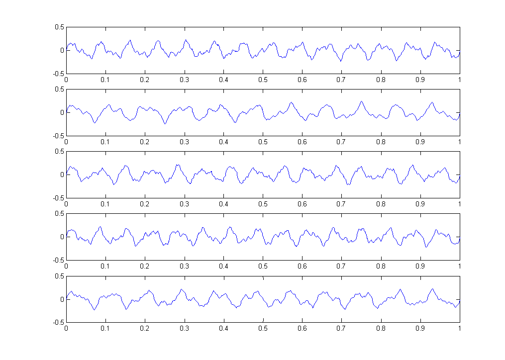
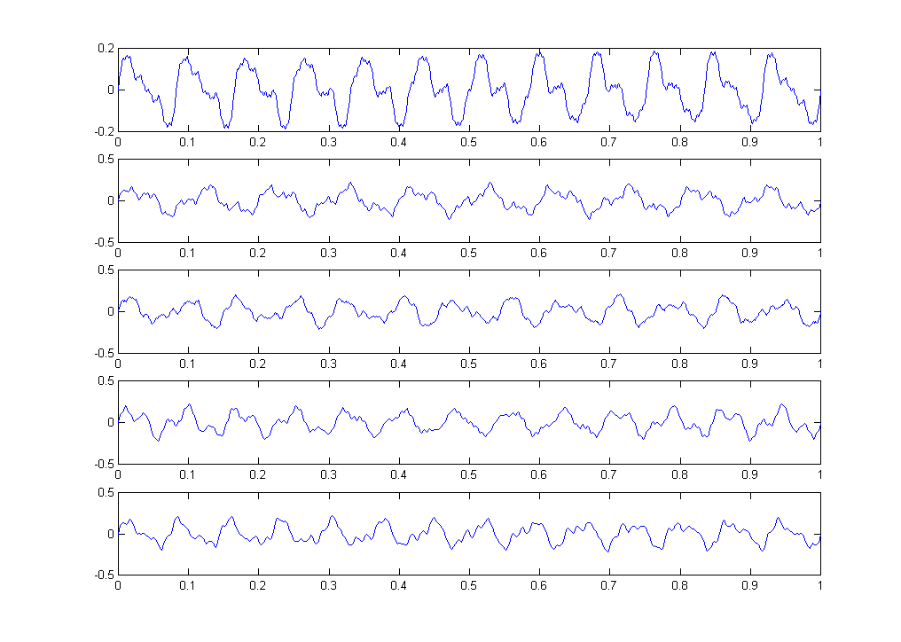

This data set is designed for testing indexing schemes in time series databases. The data appears highly periodic, but never exactly repeats itself. This feature is designed to challenge the indexing tasks.
Eamonn J. Keogh and Michael J. Pazzani Department of Information and Computer Science University of California, Irvine, California 92697 USA eamonn@ics.uci.edu, pazzani@ics.uci.eduDate Donated: February 8, 1999
This data set is designed for testing indexing schemes in time series databases. It is a much larger dataset than has been used in any published study (That we are currently aware of). It contains one million data points. The data has been split into 10 sections to facilitate testing (see below). We recommend building the index with 9 of the 100,000-datapoint sections, and randomly extracting a query shape from the 10th section. (Some previously published work seems to have used queries that were also used to build the indexing structure. This will produce optimistic results) The data are interesting because they have structure at different resolutions. Each of the 10 sections where generated by independent invocations of the function:
Where rand(x) produces a random integer between zero and x.
The data appears highly periodic, but never exactly repeats itself. This feature is designed to challenge the indexing structure. The time series are ploted below:
 The data is stored in one ASCII file. There are 10 columns, 100,000 rows. All data points are in the range -0.5 to +0.5.
Rows are separated by carriage returns, columns by spaces.
Eamonn J. Keogh, Michael J. Pazzani: (1999). An indexing scheme for similarity search in large time series databases. The 11th International Conference on Scientific and Statistical Database Management. Cleveland, Ohio.
Sanghyun Park, Dongwon Lee, and Wesley W. Chu. "Fast Retrieval of Similar Subsequences in Long Sequence Databases", In 3rd IEEE Knowledge and Data Engineering Exchange Workshop (KDEX), Chicago, IL, USA, November, 1999 (To Appear)